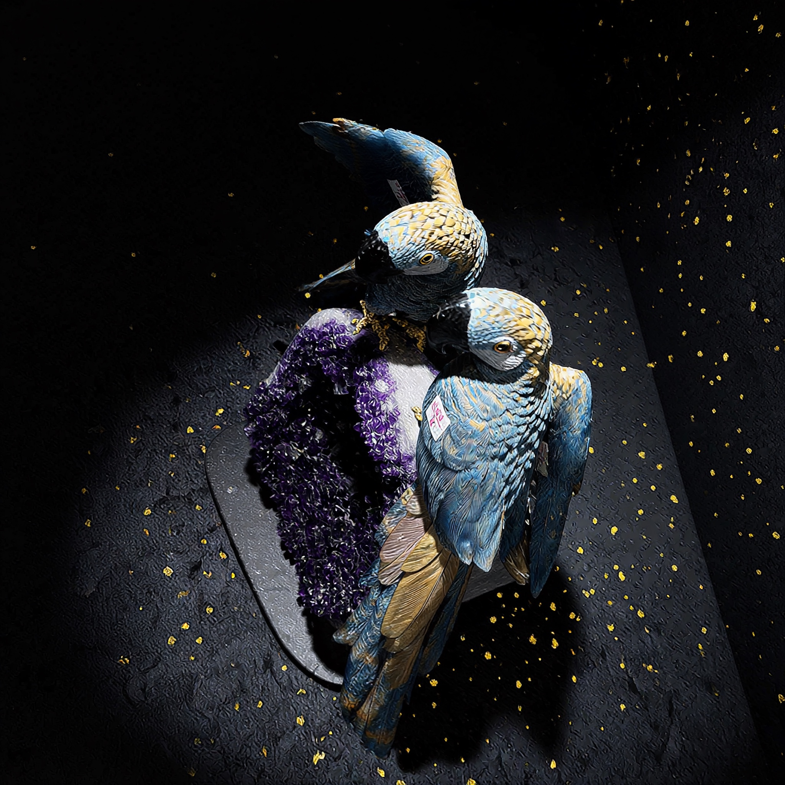
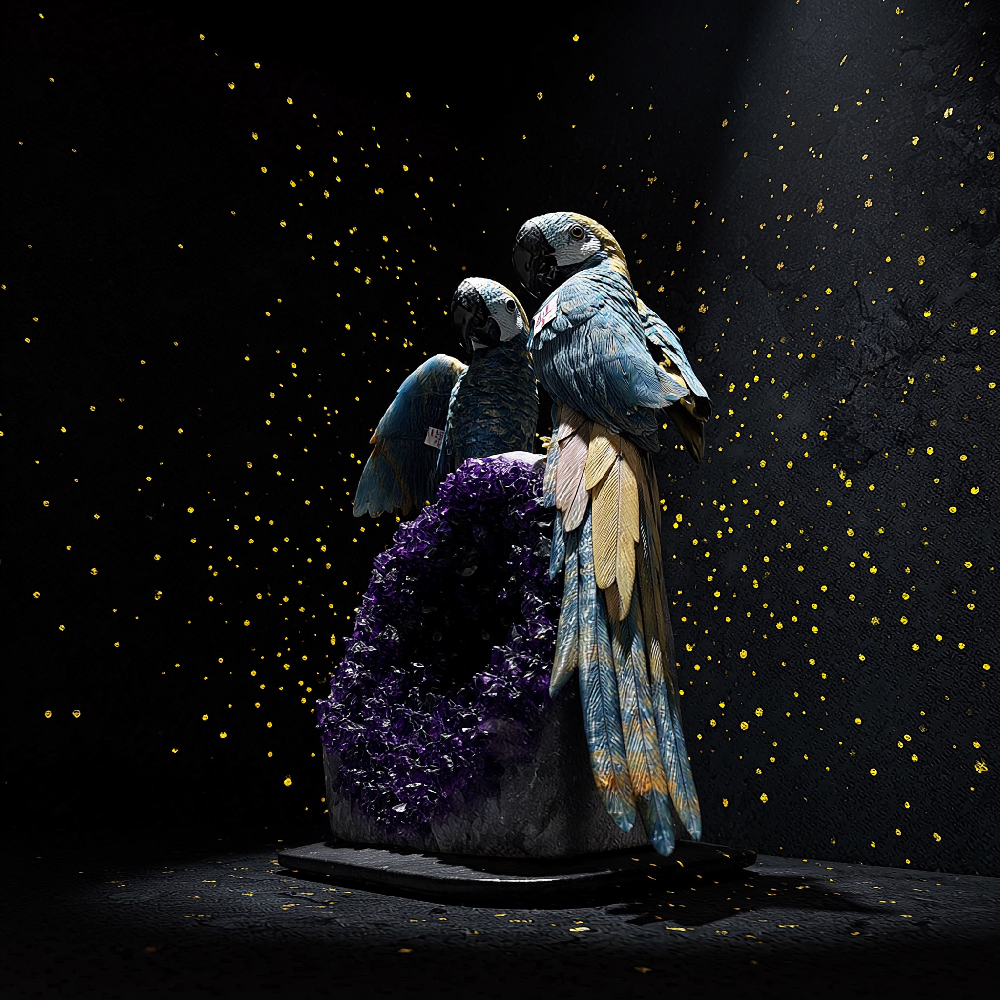

Two macaws on an amethyst crown
The Amethyst Crown · Macaw
Two birds share a single amethyst seat, and the composition puts them on different levels: the upper one stands clear with its tail thrown up behind it, the lower one settles across the front of the stone with a wing laid open. The pair reads as one animal seen twice rather than two objects placed side by side.
The plumage is cut in graded blues over a soft gold breast, feather by feather, with the tail barring worked in as separate incisions rather than suggested by polish. The beaks are a dense black stone against pale cheeks, and a fine gold chain runs across the upper bird's shoulder.
Under them the amethyst has been left as it came out of the ground on one face — a crust of small violet points — and cut back to white quartz on the other, so the seat is half raw and half sectioned. That contrast is a decision, not a saving: a fully polished base would have made the birds look placed rather than landed.